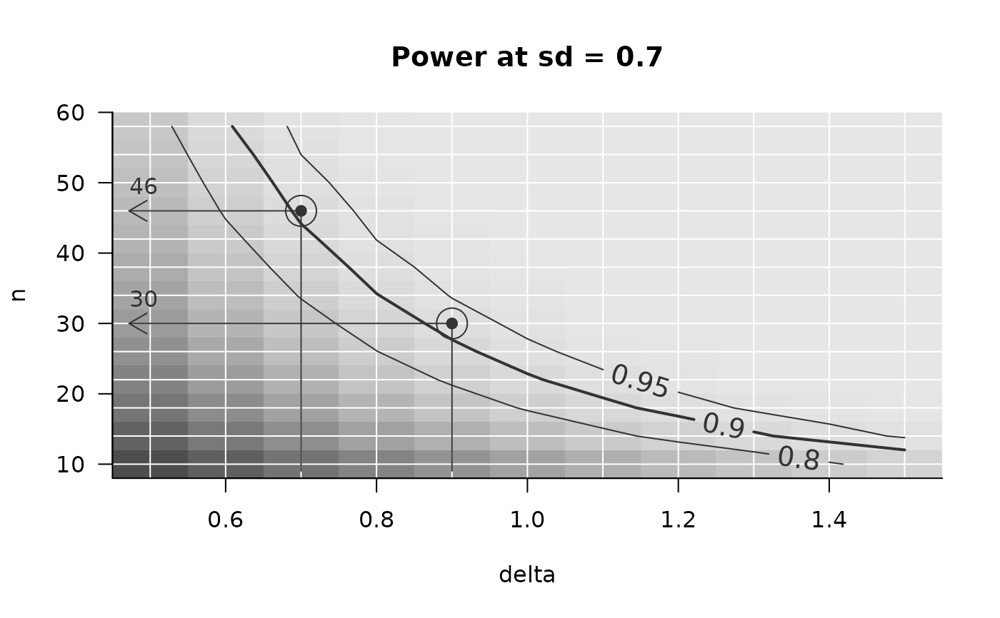
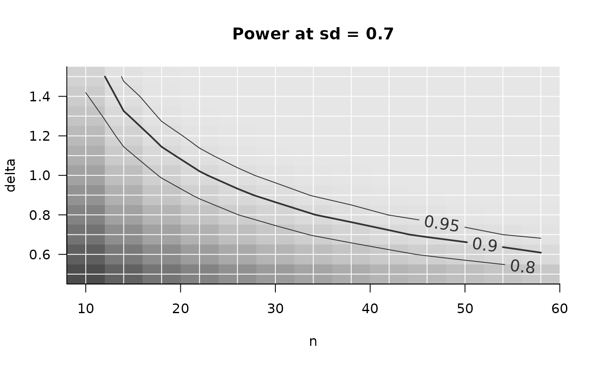
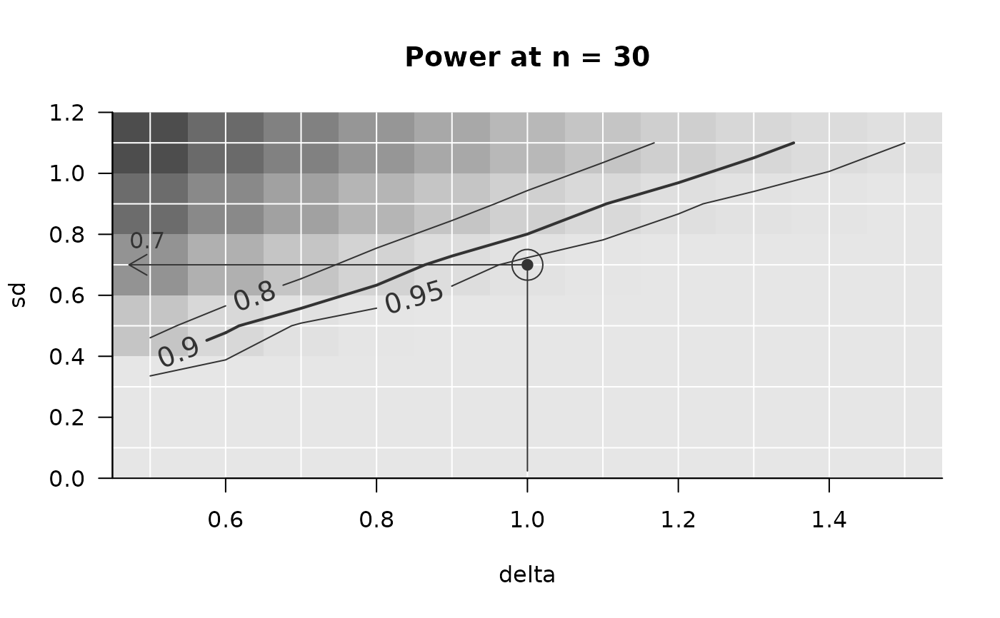

Plot (a slice of) an object of class power_array. Main
purpose is to illustrate the relation between two parameters (e.g., effect
size on the x-axis and n on the y-axis) for a given target power. An
example may be highlighted by drawing an arrow at the combination of
parameters deemed most likely.
Usage
PowerPlot(
x,
slicer = NULL,
par_to_search = "n",
find_min = TRUE,
example = NULL,
method = "step",
target = 0.9,
minimal_target = TRUE,
summary_function = mean,
target_levels = c(0.8, 0.9, 0.95),
shades_of_grey = TRUE,
shades_legend = FALSE,
title = NULL,
par_labels = NULL,
smooth = NA,
...
)Arguments
- x
An object of class "power_array" (from powergrid).
- slicer
If the parameter grid for which `x' was constructed has more than 2 dimensions, a 2-dimensional slice may be cut out using
slicer, which is a list whose elements define at which values (the list element value) of which parameter (the list element name) the slice should be cut out.- par_to_search
The variable whose minimum (or maximum, when
find_min == FALSE) is searched for achieving thetarget_levels.- find_min
Logical, indicating whether the example should be found that minimizes an assumption (e.g., minimal required n) to achieve the
targetor an example that maximizes this assumption (e.g., maximally allowed SD).- example
If not NULL, a list of length one, defining at which value (list element value) of which parameter (list element name) the example is drawn for a power of
target. You may supply a vector longer than 1 for multiple examples.- method
Method used for finding the required
search_parneeded to achievetarget. Either "step": walking in steps alongsearch_paror "lm": Interpolating assuming a linear relation betweensearch_parand(qnorm(x) + qnorm(1 - 0.05)) ^ 2. The setting "lm" is inspired on the implementation in thessepackage by Thomas Fabbro.- target
The power (or whatever the target is) for which the example, if requested, is drawn. Also defines which of the power lines is drawn with a thicker line width, among or in addition to the power lines defined by target_levels.
- minimal_target
Logical. Should target be minimally achieved (e.g., power), or maximially allowed (e.g., estimation uncertainty).
- summary_function
When x' attribute
summarizedis FALSE, x is summarized across sims using this function.- target_levels
For which levels of power (or whichever variable is contained in x) lines are drawn.
- shades_of_grey
Logical indicating whether greylevels are painted in addition to isolines to show power levels.
- shades_legend
Logical indicating whether a legend for the shading is added. Note that this legend is drawn in a separate plotting region, and does effect setting
par(mfrow)of the current plotting device.- title
Character string, if not
NULL, replaces default figure title.- par_labels
Named vector with elements named as the parameters plotted, with as values the desired labels.
- smooth
Numeric, defaults to NA, meaning no smoothing. Non NA value is used as argument
spanfor smoothing withstats::loess, regressing the contour values on the x and y-axis. Suggested value is .35. Functionality implemented for consistency withssepackage, but use is discouraged, since regressing the contour values flattens the contour plot, thereby biasing the contour lines.- ...
Further arguments are passed on to function
imageinternally. Most useful for zooming with xlim and ylim.
Details
The most common use case may be plotting the required n (on the y-axis) as a function of some other parameter (e.g., effect size, on the x-axis) for achieving a certain level of statistical power. The default argument settings reflect this use case.
The plotting is, however, more flexible. For example, one may flip the
axes by setting a different par_to_search (which defines the
y-axis). One may also search not the minimum, as in the case of sample
size, but the maximum, e.g., the highest sd at which a certain power may
still be achieved. In this case, the par_to_search is sd, and
find_min = FALSE.
Further, in the classic use case, one aims at a minimal level of
power. One may however also aim at, e.g., a maximal width of a
confidence interval. For this purpose, set minimal_target to
FALSE. See Example for more details about find_min and
minimal_target.
Examples
## ============================================
## Typical use case: minimal n for power
## ============================================
sse_pars = list(
n = seq(from = 10, to = 60, by = 4),
delta = seq(from = 0.5, to = 1.5, by = 0.1), ## effect size
sd = seq(.1, 1.1, .2)) ## Standard deviation
PowFun <- function(n, delta, sd){ # power for a t-test at alpha = .05
ptt = power.t.test(n = n/2, delta = delta, sd = sd,
sig.level = 0.05)
return(ptt$power)
}
power_array = PowerGrid(pars = sse_pars, fun = PowFun, n_iter = NA)
## explore power graphically in teh situation where sd = .7, including example
PowerPlot(power_array,
slicer = list(sd = .7),
example = list(delta = .9)
)

## Some graphical adjustments. Note that example is drawn on top of
## PowerPlot now.
PowerPlot(power_array,
slicer = list(sd = .7),
par_labels = c(n = 'Total Sample Size',
delta = 'Effect Size',
sd = 'Standard Deviation'),
target_levels = c(.8, .9), # draw fewer power isolines
target = NA # no specific power target (no line thicker)
)
AddExample(power_array,
slicer = list(sd = .7),
example = list(delta = .9),
method = 'lm',
target = .9,
col = 'Orange', lwd = 3)
## ============================================
## Less typical use case:
## minimal delta for power, given sd, as a function of n
## ============================================
## note that you can easily change what you search for: At each n, what would be
## the minimal delta?
PowerPlot(power_array,
par_to_search = 'delta',
slicer = list(sd = .7))

## ============================================
## Less typical use case:
## *maximum sd* for power, given n, as a function of delta
## ============================================
## You're not limited to study n at all, nor to searching a minimum: If n is 30, what
## is the largest sd at which we still find enough power? (as a function of
## delta on the y-axis)
PowerPlot(power_array,
par_to_search = 'sd',
find_min = FALSE,
slicer = list(n = 30))
